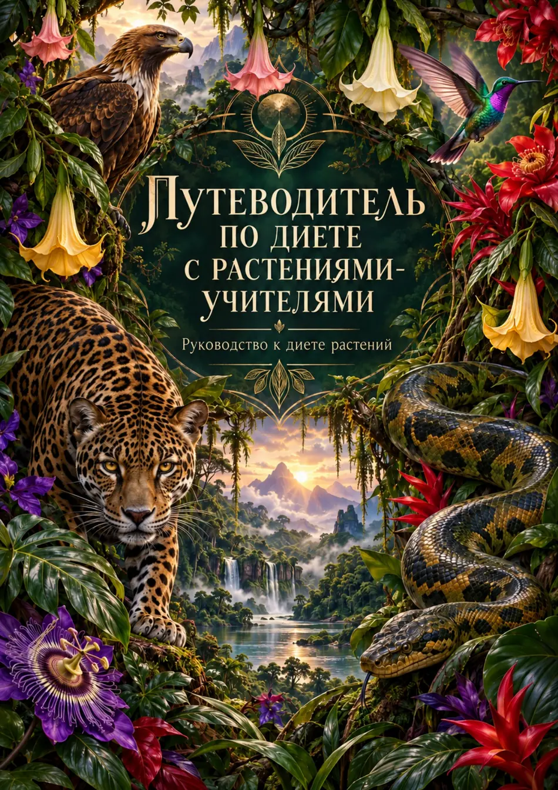
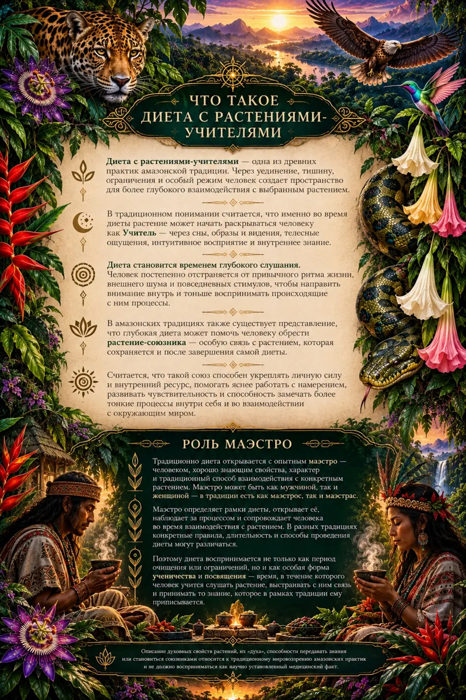
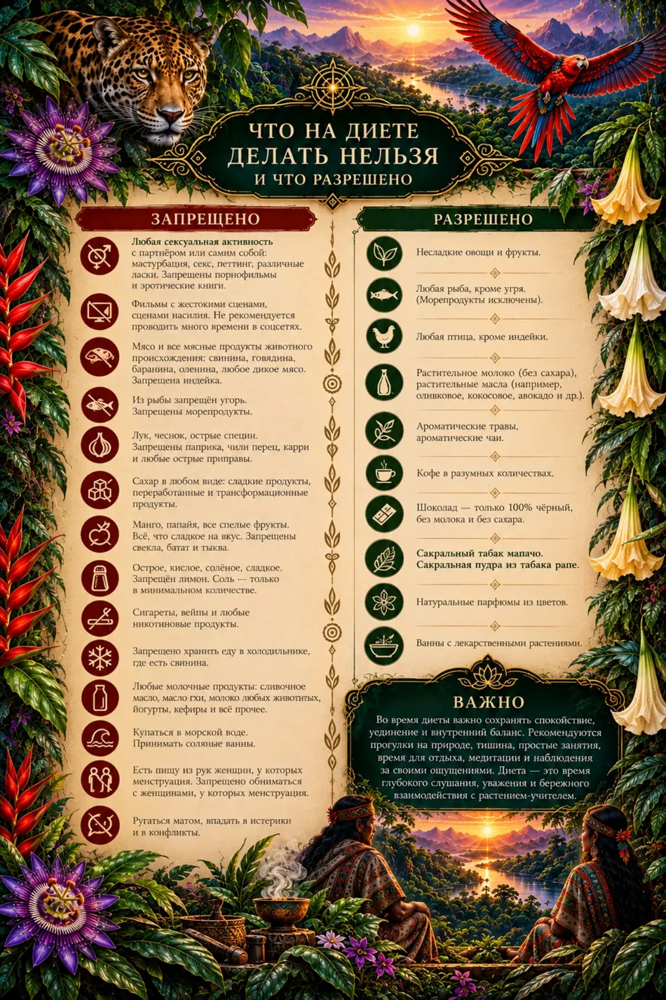
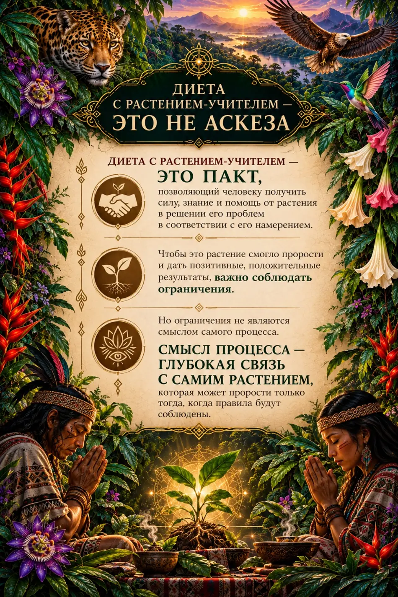
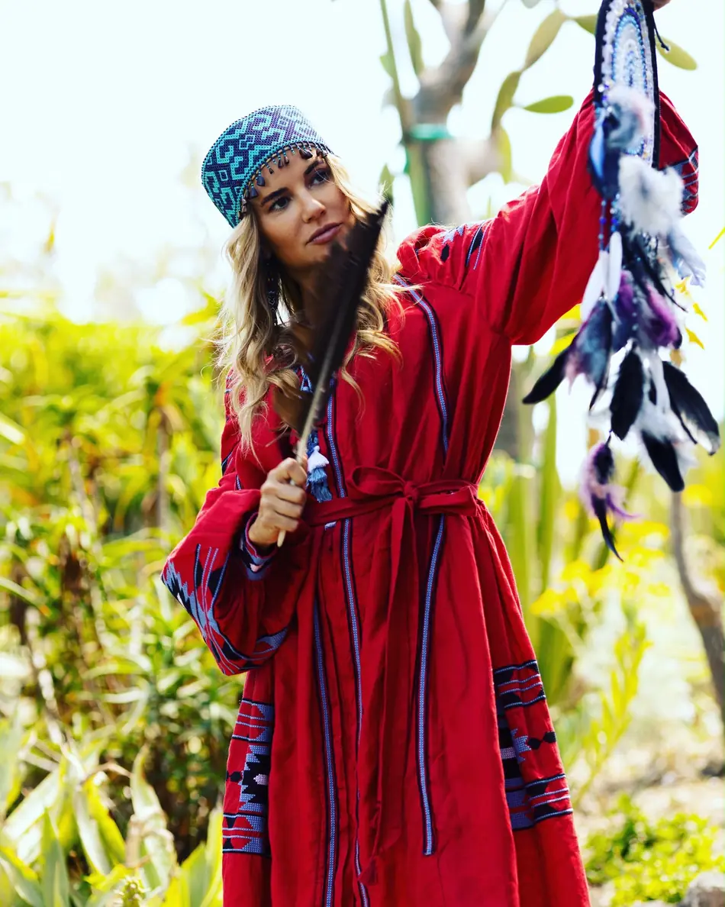

01
РастениеПодбирается не как универсальное средство, а внутри конкретной линии, запроса человека и опыта проводника.
Цифровой путеводитель по традиции растений-учителей Амазонии: что такое dieta, какую роль играет маэстро, почему ограничения считаются частью процесса, какие растения чаще всего упоминаются и где проходит граница между традицией, исследованием и безопасностью.

В традиционных описаниях dieta объединяет растение, ограниченное питание, уединение, правила поведения и сопровождение проводника. Внутри традиции эта практика используется для укрепления, переходных жизненных этапов и обучения самой медицине.
Этот материал знакомит с культурным контекстом и не заменяет медицинскую консультацию.
Подбирается не как универсальное средство, а внутри конкретной линии, запроса человека и опыта проводника.
Сокращение внешних стимулов помогает перевести внимание к снам, ощущениям, телу и внутреннему восприятию процесса.
Питание, отказ от части стимулов, сексуальное воздержание и другие ограничения создают контейнер для опыта.

В традиционной модели маэстро или vegetalista определяет рамки процесса, выбирает растение, открывает и закрывает dieta, наблюдает за состоянием человека и сопровождает интеграцию опыта.
Четыре визуальных листа собраны внутри страницы: смысл практики, роль маэстро, ограничения и финальная рамка процесса. Их можно рассматривать прямо здесь, без отдельного PDF.


Без этого блока практика превращается просто в красивый рассказ о растениях. В традиции ограничения считаются частью самого контейнера dieta.
В разных линиях ограничения могут различаться. Перед практическим применением рамки определяет маэстро или сопровождающий специалист с учётом растения, длительности и состояния человека.
Смысл процесса не в том, чтобы терпеть ограничения ради самих ограничений. Смысл — в связи, которая выстраивается между человеком, растением и вниманием.
«Сначала создаётся рамка. Потом внутри этой рамки человек учится слышать процесс, растение и собственное состояние».
Научный слой здесь нужен не для сухости, а для опоры. Он показывает, что за популярным словом dieta стоит сложная практика, описанная в этнографических и этнофармакологических работах.
В работе 2011 года были опрошены 140 взрослых жителей, описаны 122 dietas и 106 разных видов растений.
Луис Эдуардо Луна описал концепцию «растений как учителей» среди метисских шаманов Икитоса.
Dieta описывается как самостоятельная техника амазонской медицины. Аяуаска может быть частью отдельных линий, но не является синонимом самой dieta.
Этнографическая работа Луны о концепции растений-учителей у четырёх метисских шаманов Икитоса.
этнографияИсследование 140 жителей, 122 dietas и 106 видов растений в сельской части долины Чазута.
этнофармакологияКачественное исследование, в котором dieta рассматривается как сложная практика, не сводимая только к фармакологии.
интервьюНебольшое исследование участников центра Takiwasi описывает субъективные изменения после прохождения dieta.
самоотчётНекоторые растения из традиционного корпуса содержат сильнодействующие или токсичные соединения. Самостоятельно воспроизводить приготовление, дозировки или сочетания по интернет-описанию опасно.
Brugmansia, некоторые Strychnos, Nicotiana rustica, Hura crepitans и Jatropha gossypifolia требуют повышенной осторожности.
При беременности, заболеваниях, психиатрическом анамнезе или приёме лекарств нужна профессиональная оценка рисков до участия.
Просвещённый проводник может ясно рассказать, откуда пришло его обучение, как устроен скрининг, что происходит при осложнениях и где заканчиваются его компетенции.
Нет. Питание — только часть процесса. Dieta включает растение, правила поведения, уединение и ритуальный контекст.
Нет. В некоторых линиях аяуаска присутствует, в других — нет.
Нет. Есть растения, которые ценятся не за выраженное изменение сознания, а за место в лечебной и ритуальной системе.
Полезно спрашивать о линии обучения, медицинском скрининге, команде, протоколе при осложнениях и возможностях отказаться от участия.
Традиционные представления намеренно отделены от научных выводов. Это делает страницу сильнее и честнее.

В традиции важно не искать «самое сильное» растение, а понимать порядок: кто ведёт процесс, какие рамки соблюдаются, как проходит подготовка и что происходит после. Дарье можно написать спокойно, без обязательств, чтобы задать вопросы, почувствовать человеческий контакт и понять ближайший шаг.
В группу можно перейти мягко: сначала читать, знакомиться с материалами, наблюдать за атмосферой и только потом решать, насколько вам близок этот путь.